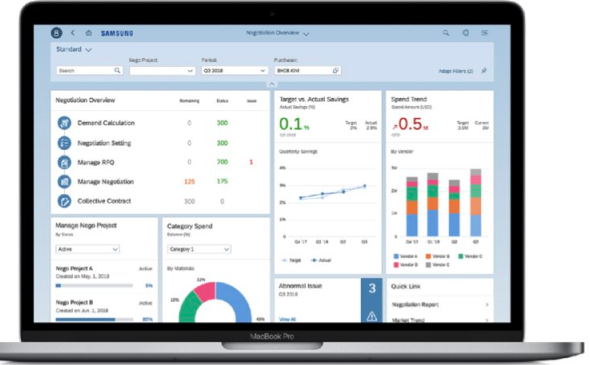
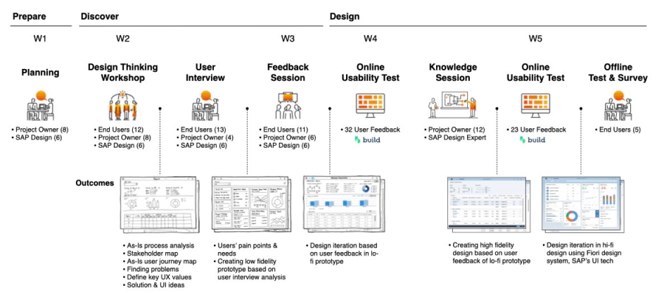
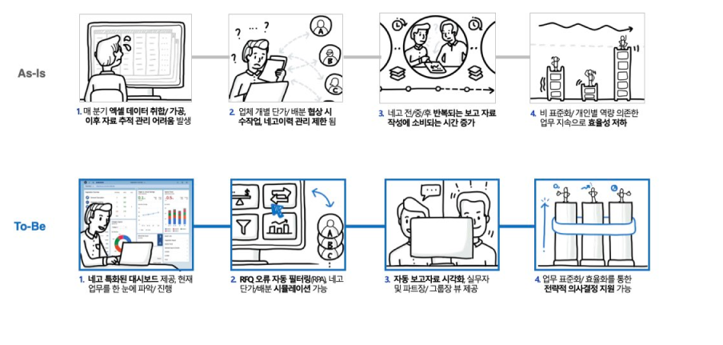
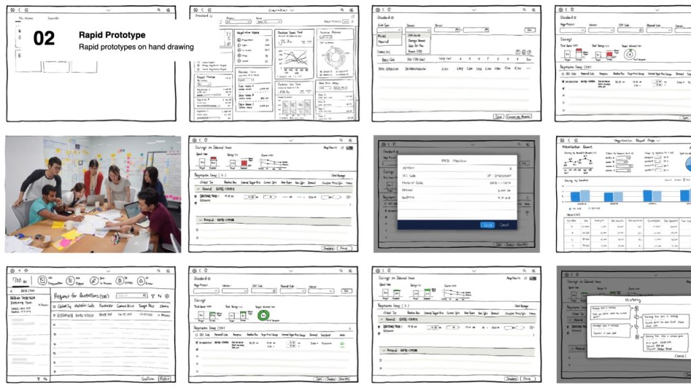
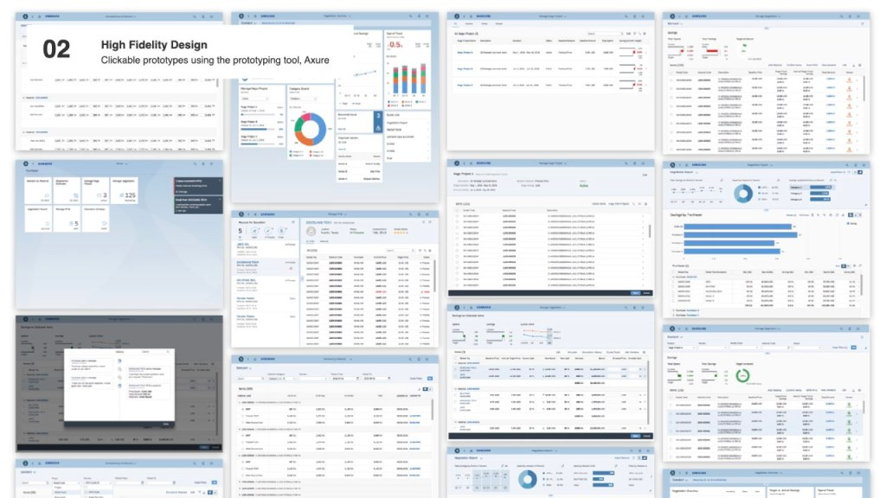

Samsung's buyers negotiated prices and distributed volumes in Excel, across seven different material codes and four systems. As part of Samsung's next-generation ERP (N-ERP), we turned that manual work into an automated purchasing process — with end users shaping every phase.

Negotiation preparation and price distribution were done by hand in Excel. Buyers worked with seven different material codes globally and four separate systems to gather data and communicate — a process prone to human error.
Our design direction: improve efficiency, shorten processing and decision time, simplify complex work, make data visible, and minimize manual tasks through process automation.
From design thinking workshops to final user tests, end users were key stakeholders. We uncovered pain points and hidden problems with them, had them generate the first ideas for the new process, and iterated up to ten times on their feedback.

Storyboards contrasted the manual process with an automated one where users understand current conditions at a glance.

We sketched the flows by hand and tested them with users before moving to high fidelity.

Clickable high-fidelity prototypes in Axure, built on the SAP Fiori design system and refined through online usability tests.
